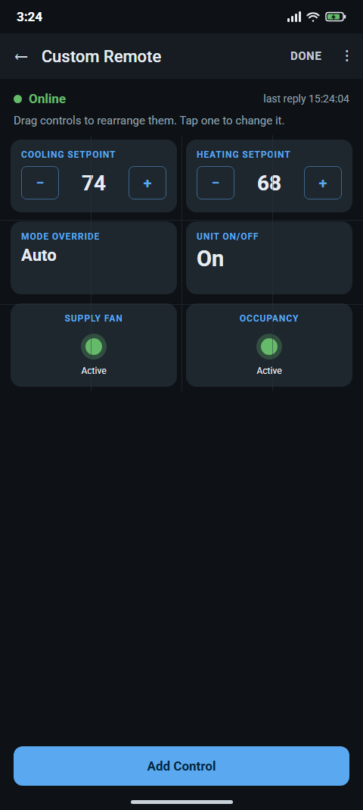
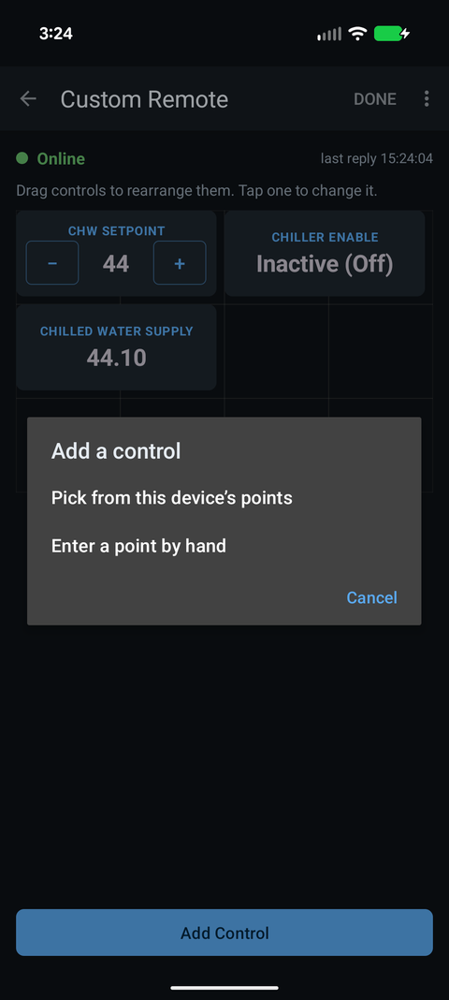
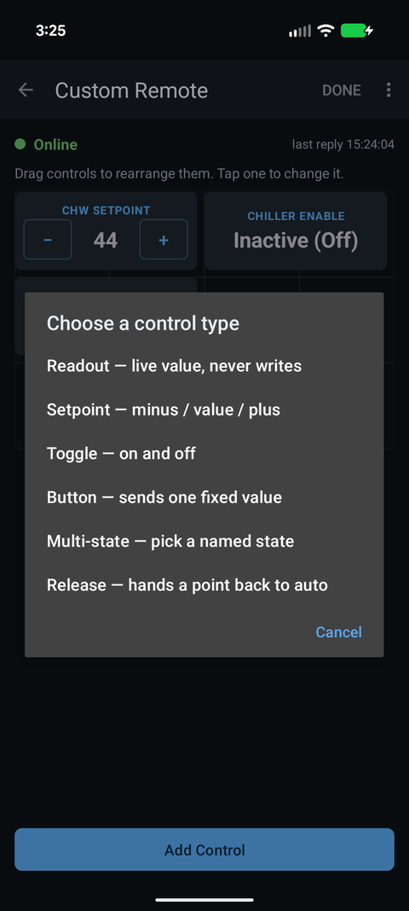
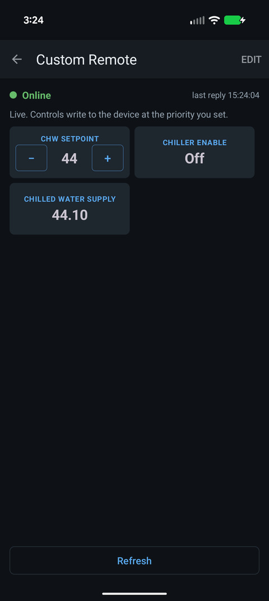

How do I build a custom remote for a BACnet IP device in Easy BACnet?
Updated 30 September 2026
Scan, open a device, tap the menu (three dots) and choose
Custom Remote. Tap Edit, then Add Control:
pick a point from the device's list (or Enter a point by hand), then
choose a control type — Readout, Indicator,
Setpoint, Toggle, Button,
Multi-state or Release. Drag controls around the
four-column grid, tap one to rename, resize, recolour or set its write priority, then tap
Done. Saved remotes live under My Remotes; long-press one
to export it as an .ebremote file. The free version keeps one remote (opening
it asks to show a short ad); Easy BACnet Pro, a $9.99-a-year subscription, removes the ads
and the limit.




Need one screen for several devices — a whole boiler room? That is the Control Panel Builder, which uses the same designer for up to 32 devices at once.
What a custom remote is for
The point list shows everything a controller has — eighty rows on a typical rooftop unit. A custom remote is the six of those you actually touch, laid out as big controls on one screen: the zone setpoint, the fan, the mode, the supply temperature. You build it once per device and it is there every visit. Each device has one remote, and the remote follows the device by its Device ID, so it survives an IP change.
Step 1 — Open (or create) the device's remote
Any of these gets you there:
- From a scan: in Easy BACnet Mode tap Scan for Devices, then View Results, tap the device, open the menu (three dots) and tap Custom Remote.
- From the opening screen: tap the Custom Remotes card. The My Remotes screen lists your saved remotes. With none yet it offers Scan for Devices (no scan this session) or Choose a Device (pick from Build a remote for which device?).
- From the main screen: the My Remotes (n) button, or My Remotes in the menu.
A new remote opens empty: No controls yet. Tap Edit, then Add Control.
Step 2 — Turn on Edit mode and add a control
Tap Edit in the top bar. The hint reads Drag controls to rearrange them. Tap one to change it. Nothing is sent to the device while you edit. Tap Add Control; under Add a control choose how to pick the point:
- Pick from this device’s points — the list the app already read, under Choose a point. If you see This device’s point list has not loaded yet, go back and open the device's point list once, or enter the point by hand.
- Enter a point by hand — an Object type and Object instance. Use it for a point beyond the 2,000-object load limit or one you know from a points list.
Then Choose a control type (each row shows a small picture of the control):
| Control | What it does | Use it for |
|---|---|---|
| Readout | Live value, never writes. | Supply temperature, pressure, anything you just want to see. |
| Indicator | Status light, read-only. Lit when the value is at or above a threshold. | Fan status, alarm, filter switch — binary or analog inputs. |
| Setpoint | Minus / value / plus. Tap the value to type an exact number. | Zone setpoint, damper minimum, any analog you adjust. |
| Toggle | Switches between on and off. | Fan enable, occupancy override, pump command. |
| Button | Sends one fixed value when tapped (after a confirmation). | A reset, a “go to 100%”. |
| Multi-state | Pick a named state. | Fan speed Off/Low/High, operating mode. |
| Release | Hands the point back to automatic at this control's priority. | Put one next to every control that writes. |
The control lands in the first free spot on the grid, labelled with the point name.
Step 3 — Arrange it on the grid
A remote is a four-column grid. In Edit mode, press and drag a control to move it: it snaps to the grid and will not land on top of another control. To make a control wider, tap it and choose Width; if there is no room at that width you will see No room at that width. Move the control first.
Step 4 — Configure each control
In Edit mode, tap a control for its options. Every control has:
- Rename control — label it by what it does (“Boiler 2 enable” beats “BO-3”).
- Width — 1 to 4 columns (setpoints and multi-state pickers need at least 2).
- Write priority — the BACnet priority (1–16) its writes and releases use. 8 (manual operator) is the default; see BACnet priority.
- Colour — Theme default, Blue, Green (running / normal), Amber (caution) or Red (stops equipment).
- Card style — Filled (default), Outlined (quieter, good for readouts) or Bold (tinted, for controls that act).
- Toggle large value text — oversized digits for the one value you read from across the room.
- Delete control.
Plus, by type:
- Setpoint: Step size — how far one press of minus or plus moves it.
- Button: Value to send.
- Multi-state: State names — one per line, the first line is state 1.
- Indicator: Indicator style (Lamp, LED, Pill, Bar or Ring), On colour and Off colour (green, red, amber or blue; default green on, red off), and On at / above — the threshold that lights it (0.5 by default, so a binary 1 is on).
Colour is a safety feature, not decoration. Make the control that stops a fan red and leave the ones that only display temperatures plain. On a ladder, with gloves on, that is the difference you will actually see.
Everything saves as you go. In Edit mode the menu also has Rename remote and Delete remote (which removes the controls from this phone only; nothing on the device changes). Tap Done when it looks right.
Step 5 — Use it
Out of Edit mode the remote is live. The status line at the top tells you the truth about the connection: Online with the time of the last reply, Some points not answering, or No response from device — and when the device stops answering, values grey out rather than sitting there looking current. Tap Refresh for a fresh read of everything.
Controls that write need Write mode turned on from the menu on the main screen, exactly like the point screen — see how to write to a BACnet point. Until then the remote says Read-only. With write mode on, know what acts at once and what asks first: the setpoint's minus/plus, a toggle and picking a multi-state state write immediately; a typed setpoint value, a button and a release ask you to confirm. A toggle or step will not act until the point has been read (No value read yet — tap Refresh first), so it never guesses. Every write and release appears in the Session write log on the main screen's menu.
Coming back to it
Saved remotes appear under My Remotes, one per device, showing the device name, how many controls it has and its last known IP address. Open one and it talks to the controller directly at that address — no scan needed. If the controller has moved, the remote reports it unreachable and a fresh scan puts it right.
Sharing a remote: export and import
- Export: on My Remotes, long-press a
remote. Android's save dialog opens with a file named after the device
(
Device name.ebremote); save it to Downloads, Drive or wherever you like, then send it as you would any file. - Import: on My Remotes, menu → Import
remote, then pick the
.ebremotefile. If you already have a remote for that device, the app asks Replace the existing remote? first. A control-panel file (.ebpanel) is refused here — import it in Control Panel Builder.
The file is plain JSON holding the layout, the device's ID and its last known address. It holds no values from the building.
Free vs Easy BACnet Pro
Scanning, reading, writing and exporting are free. Custom remotes are limited on the free version, but gently: on the free version you can keep one remote (for one device). Opening that saved remote asks Watch a short ad? — choose Watch ad, Remove ads or Cancel; no ad plays unless you choose it. If no ad can load — common in a plant room with no signal — the remote just opens, so you are never locked out of your own controls. Building or importing a second remote shows One remote on the free version with an Unlock button.
Easy BACnet Pro is a Google Play subscription: $9.99 a year (Play shows the price in your currency), with a 14-day free trial if you have never had it before. It removes the ads and lifts the limit: as many remotes as you like, on as many devices as you look after. Cancel any time in Google Play › Subscriptions; Pro stays on until the end of the year you paid for. If it ends, your remotes are kept — nothing is deleted — but the free limit and the ads come back.